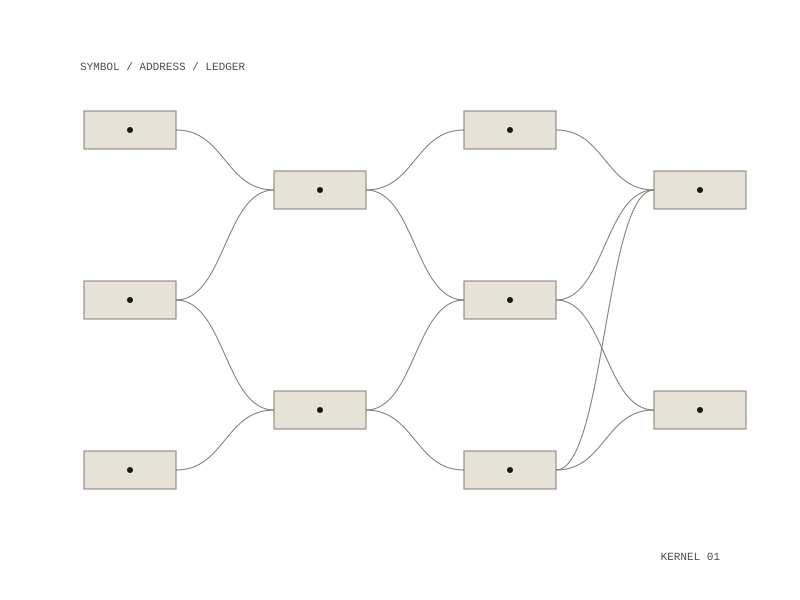

20 / project
Divinatory OS
A symbolic operating system for divinatory practice
A versioned correspondence graph as kernel, divinatory methods as programs that return addresses into it, and an append-only ledger of readings and outcomes as memory.

Three layers, one address space
- kernel: correspondence graph, addresses, typed cited edges. Deterministic, model-free.
- methods: divinatory programs. Question plus seed returns addresses. Replayable.
- ledger: append-only draws, interpretations, outcomes. Never merged, never edited.
A cast
A cast produces addresses from a recorded seed, the draw is fsynced before anything can
interpret it, and replay re-derives it from the ledger alone.
The I Ching is seeded: 72 symbols, 512 cited edges.
The Divinatory iPhone app has four tabs (Cast, Ledger, Sources, Settings), with the Rust core compiled in, so it works with no network at all.
What reads from it
Six Rites for the Living Remainder reads its spirit corpus from here in place: 68 spirits transcribed from Reginald Scot, The Discovery of Witchcraft (1665). Nothing is copied across, so no citation can drift from what it cites.
Built with
Rust: kernel, methods, ledger, ffi crates
Docker, Make, git; Xcode and xcodegen for the iPhone app
Rust: kernel, methods, ledger, ffi crates
Docker, Make, git; Xcode and xcodegen for the iPhone app
Repository: private
All work